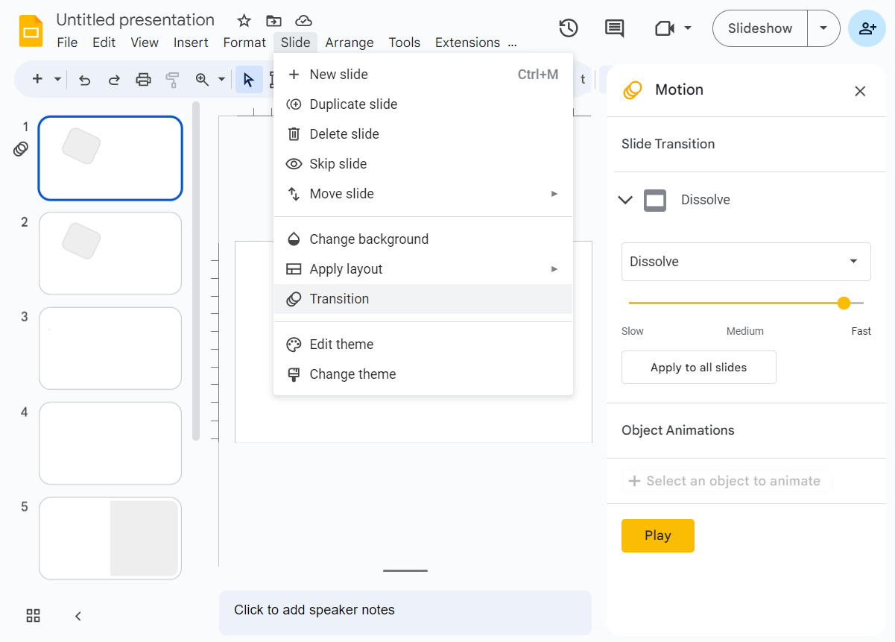
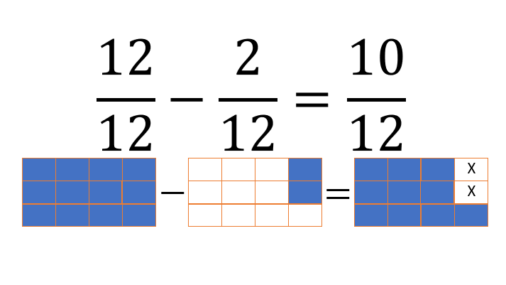

Extend Yourself - Google Slides: Show and Tell Fractions
 Google Slides: Transitions and Animations
Google Slides: Transitions and Animations
Animation in Google Slides is a way to add movement to objects on a slide. You can use animation to make text or objects appear, disappear, or move around on the slide. A slide transition is the animation that happens when you go from one slide to the next in a presentation.
Explore how to add transitions and animations to your Google Slides presentation. Google has tutorials to help you do what you need. You can Google “Add Transitions,” for example, or you can use this link: Add or change animations and transitions Notice that you can choose between computer, android and iPhone/iPad instructions. This option is found just above the instructions.

Same Equation, New Problem
Create a new word problem using the same equation. Create a new modified Google Slides to accompany the new problem. For example, instead of having a collection of rocks, Sherry could have a carton of eggs.
Same Problem, New Equation
Modify the word problem using the same general problem but with new numbers. Create a new modified Google Slides for the new word problem. For example, instead of giving away 3 rocks, Sherry could have given away only 2 of the 12. Or instead of starting with 12 rocks, she could have started with 10.
